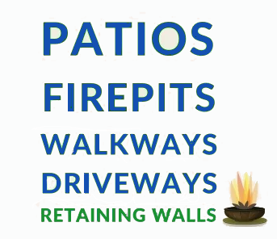

Site Planning
Modern Hardscape Materials

What is Hardscaping?
When you picture your ideal outdoor space, you're probably imagining more than lawns and garden beds. The patios, walkways, pergolas, fire pits, and other built features that turn a simple yard into a true outdoor living area all fall under the category of hardscaping. Understanding what hardscaping includes — and how it shapes your landscape — helps you make thoughtful design choices and create a space that's both beautiful and functional.
Understanding Hardscapes
Hardscaping refers to the non‑living, structural elements of a landscape — features made from durable materials such as stone, concrete, wood, and metal. Unlike softscape elements like plants, shrubs, and soil, hardscape components provide the framework and long‑term stability of your outdoor design.
These features act as the backbone of your landscape, offering lasting solutions with minimal maintenance. Whether it's a retaining wall that prevents soil erosion or a pergola that creates a shaded gathering space, hardscaping elevates an ordinary yard into a purposeful, inviting environment.
Homeowners increasingly rely on hardscape elements to solve practical challenges — like drainage issues or uneven terrain — while also enhancing the overall look and usability of their property. From defining entertainment zones to improving accessibility, hardscaping delivers durable, long‑term value.
Popular Hardscaping Features and Their Functions
Common hardscape elements that shape outdoor living spaces include:
- Patios and Outdoor Kitchens: Create comfortable areas for dining, cooking, and entertaining.
- Walkways and Pathways: Improve flow and accessibility throughout the yard.
- Pergolas and Gazebos: Provide shade, structure, and architectural interest.
- Retaining Walls and Steps: Manage slopes, prevent erosion, and add dimension to the landscape.
- Fire Features: Fire pits and fireplaces offer warmth, ambiance, and year‑round usability.
- Water Features: Fountains, ponds, and waterfalls add tranquility and visual appeal.
Key Takeaways
- Clear, actionable point
- Another important insight
- Final takeaway